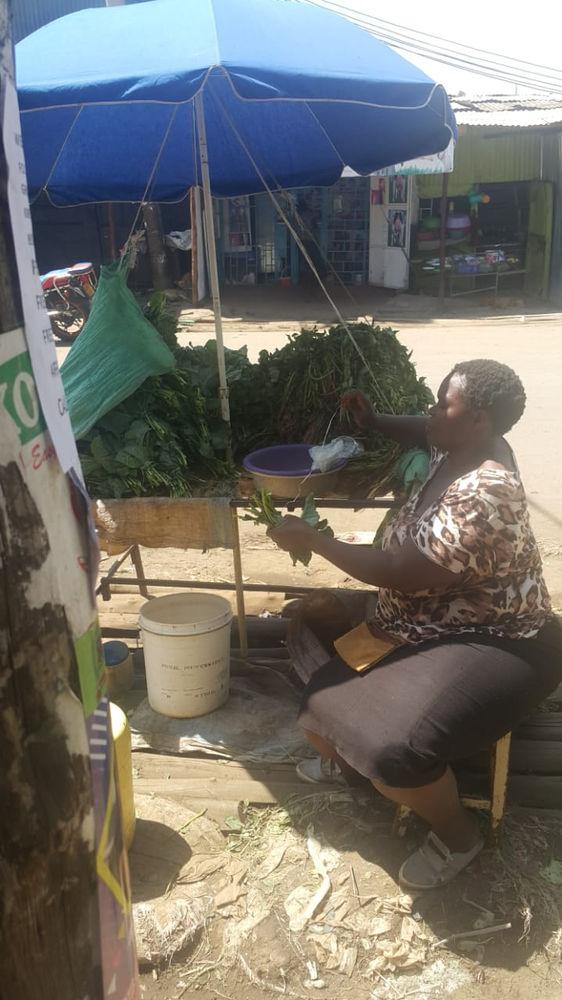
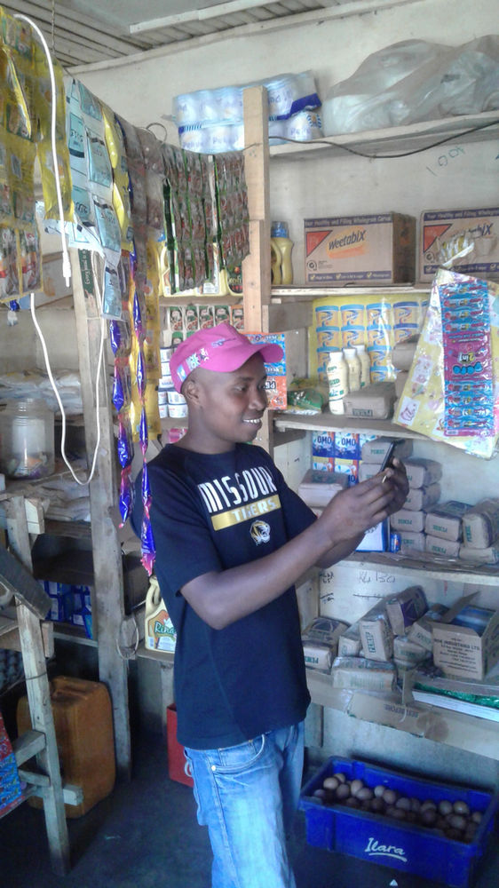

Blockchain in Clinics, Vegetables, Cafes and Shops
While the rest of the world wonders how blockchain will impact lives these people are using it daily to bring their community out of poverty. Welcome to 2019.

Dorothy Nyangara has been using Sarafu for the last one year. She owns a pharmacy and clinic in Lindi, Kibra (Kenya’s largest slum). She uses Sarafu to purchase food for her family at least four times a week. Dorothy accepts sarafu from users who come to purchase medicines for themselves or their children and seek medical checkups. She is happy that Sarafu is helping her save Kenya Shillings which she uses to pay for transport to Nairobi CBD whenever she is going to purchase medicines for her chemist. Her customers see Sarafu as a basic health insurance - they know that as long as they have it they can get the medicines and help they need.
Ruth Bosibori sells vegetables around Sunday Studio area in Kibra, Lindi Community. She joined Sarafu over 3 years ago has been using paper money until when she received her digital tokens. Ruth is among the people who trade daily using Sarafu in Lindi. She was rewarded by the community in November for being one of the people who had supported the community the most with Sarafu. Ruth uses Sarafu to purchase medicine and food for her family on a daily basis. She is also able to use Sarafu as part of her child’s school fees.

Edwin Makori is a hotel owner at Gatina in Kawangware. He joined Sarafu early 2018 but he was skeptical about using it because he had not seen its benefits yet. Around June, he started using the digital Sarafu (Community Currency). Edwin has seen the benefits of Sarafu because he can now save some Kenyan shillings when he goes to purchase fuel or food for his cafe. Now he is too excited about Sarafu since more people he trades with him daily also joined the network. Currently Edwin trades at least twice a week when he is missing Kenyan Shillings. He is able to buy raw food and also fuel using Sarafu.
Isaac Naimbona is a shopkeeper in Gatina. He joined Sarafu early last year through a client that sells fruits using Sarafu. According to him, Sarafu is beneficial to him since he is able to get food he needs for his family. He trades daily either on fruits or vegetables just outside his shop. When asked about his views on Digital blockchain-based system, he said that it is easier for him since he doesn’t have to carry a lot of money in his wallet and he can see his account history. Also, he says that he is able to send the fruit seller or the vegetable vendor money without having to leave his shop. Isaac is excited that last year December the community he trades with gave him a Christmas gift of some stock to boost his business.